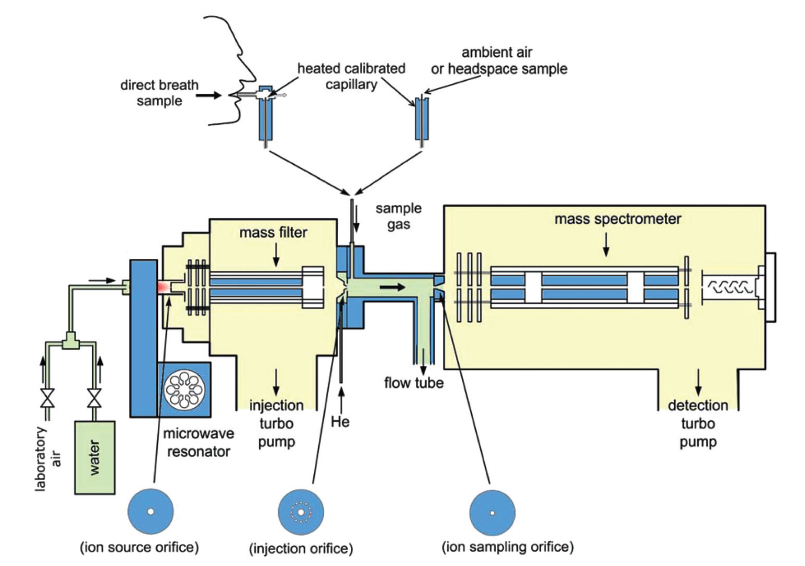
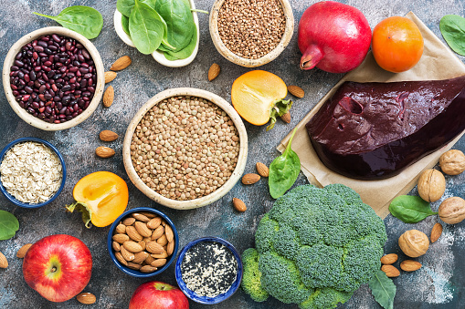
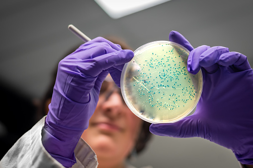
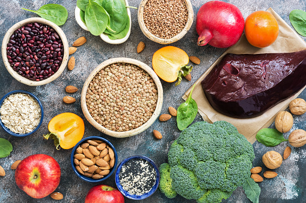
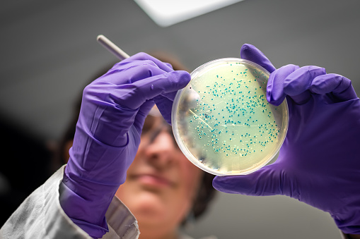

O mně

Vítejte na mých úplně prvních webových stránkách.
Jmenuji se Kristýna, momentálně jsem na rodičovské dovolené, jsem máma dvou dětí.
Než jsem opustila bezstarostný bezdětný život, pracovala jsem ve vědě a věnovala se především vývoji nových analytických metod.
Více si o mé práci můžete přečíst zde.
Na podzim roku 2021 jsem se od kamaráda dozvěděla o Czechitas.
Zkusila jsem si několik jednodenních kurzů, kde mě okouzlila tvorba webu.
Je to už dlouho, co mám opět chuť se učit něco nového a těším se na tvorbu vlastních a krásných webů.
Vzdělání
2009-2013
Doktorské studium, Přírodovědecká fakulta Univerzity Karlovy v Praze, Katedra fyzikální a makromolekulární chemie, školitel: prof. Patrik Španěl
Udělen Ph.D. titul v oboru fyzikální chemie (Téma: Selected Ion Flow Tube Mass Spectrometry, SIFT-MS). 7.11. 2013.
2007-2009
Magisterské studium v oboru chemie životního prostředí, Přírodovědecká fakulta UK v Praze, Katedra fyzikální a makromolekulární chemie, školitel: prof. Svatopluk Civiš
2004-2007
Bakalářské studium v oboru chemie životního prostředí, Přírodovědecká fakulta UK v Praze, Katedra fyzikální a makromolekulární chemie, školitel: prof. Svatopluk Civiš
Pracovní zkušenosti

Od roku 2009, tedy od počátku mého postgraduálního studia, jsem zaměstnána na Ústavu fyzikální chemie J. Heyrovského, AVČR, v.v.i. v Oddělení chemie iontů v plynné fázi na pozici vědeckého pracovníka.
Ve své práci jsem se věnovala vývoji nových analytických metod, které umožňují rychlé a přesné stanovení koncentrací stopových plynů. Využívala jsem pro svou práci hmotnostní spektrometrii, konkrétně SIFT-MS, hmotnostní spektrometrii v proudové trubici s vybranými ionty.
Primárně byla tato technika vyvinuta pro analýzu stopových plynů v lidském dechu. Na tomto principu vznikly studie týkající se fyziologie zdravé populace a onemocnění např. cystickou fibrózou nebo idiopatické střevní choroby. Mezi další aplikace patří monitorování kvality ovzduší, environmentální výzkum, potravinářství, ochrana a bezpečnost, měření toků biogenních organických látek.
 



Seznam mých publikací je k nalezení zde.
Kontakt
Adresa
Kristýna Sovová
U Váhy 1191
Kostelec nad Orlicí
517 41
E-mail: ksovova@gmail.com
Mobil: +420 111 222 333
Nebo mě můžete kontaktovat na LinkedIn.